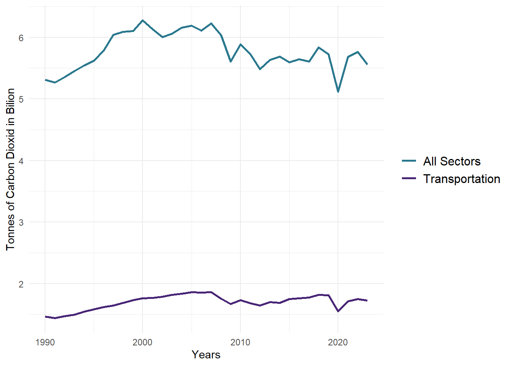
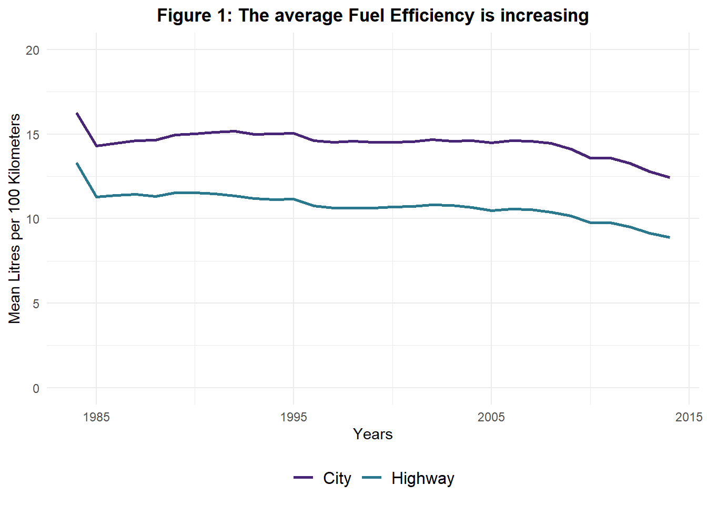
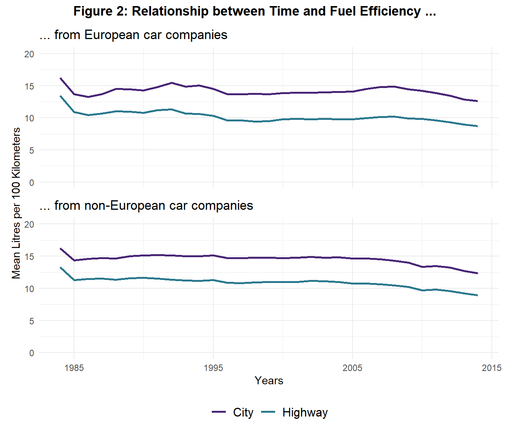
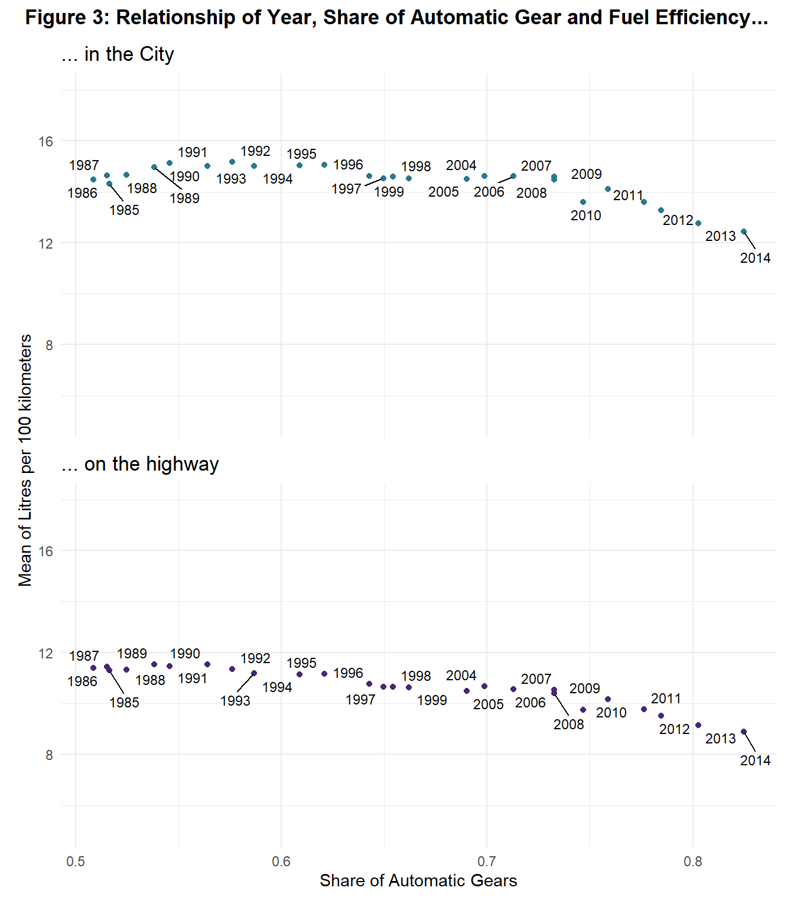
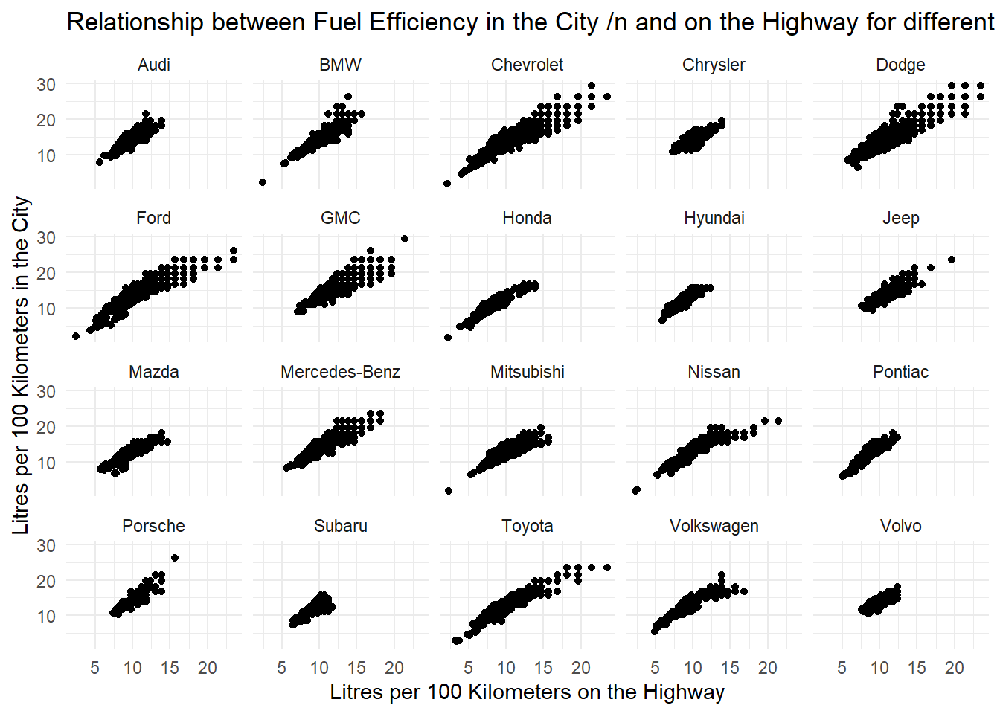

What car characteristics increase Fuel Efficiency?
Emissions of American Cars: A Datavisualization
Climate change is an increasingly serious problem for nature, animals and humans. It leads to rising global temperatures, which intensify extreme weather events and causes sea-level rise, glacier melt and ocean warming. These changes disrupt ecosystems, threaten food and water security, and increase health risks and economic and social stresses.
One major driver of climate change are emissions from transportation (Figure 1). Within the transportation sector cars make up a majority of emissions with about 59 percent (2017). This project analyses the relationship of car characteristics such as the number of gears and cylinders on fuel efficiency.
The data is from… However, it should be mentioned that it only contains cars for the American market. Therefore, the analysis cannot be exceeded to other markets like the European one.
Fuel efficiency over time

Figure 1 shows that fuel consumption decreased between 1984 and 2015, meaning fuel usage increased during this period. However, this effect has only been clearly visible since the late 2000s. Prior to this, fuel efficiency remained largely unchanged. This shift could be explained by increased car regulations in the EU. Even though European car companies produce different car models for the American and European markets, there could still be spill-over effects.
While this explanation seems reasonable, it cannot be confirmed with the data. Figure 2 shows that there are only minor differences in fuel efficiency between European and non-European car companies over time. Although European cars have become slightly more fuel efficient since around 2007, this is not sufficient to explain the overall trend. This suggests that EU policy regulations are not having a spill-over effect on the American car market. As there were no other significant events in the late 2000s, this report considers technical reasons for the increase in fuel efficiency.

Automatic Gear
A significant development in American car technology is the growing popularity of automatic gearboxes. Unlike in Europe, where they were initially unpopular, automatic gears have always been popular in the United States as they were first developed by General Motors. Figure 3 shows that, by the mid-1980s, more than half of American cars had automatic gears.
Over the decades, the proportion of cars with automatic gearboxes has grown. By 2014, more than four fifths of American cars had automatic gearboxes. Automatic gearboxes are generally better for fuel efficiency because they keep the gears within their optimal speed range. This is verified by the data, which shows that fuel efficiency increases with a higher share of automatic transmission. This relationship can be seen for both highway and city driving. The relationship is stronger for city driving than for highway driving.

Number of Gears

Figure 4 shows two box plots for each number of gear: one showing fuel efficiency on the highway and one showing fuel efficiency in the city. In general, more gears lead to better fuel efficiency. However, there are differences between highway and city traffic. Three and four gears perform similarly on the highway, with an average fuel consumption of around 11 litres per 100 kilometres. However, the median for three gears is lower in city traffic, indicating better fuel efficiency for three gears than four in the city.
Five gears perform better than four gears in both settings. On the highway, fuel efficiency is around 10 litres per 100 kilometres. Cars with more than five gears perform similarly to cars with five gears in city traffic. There are only small differences in the median for all different gears, with the exception of nine gears, which perform best in city traffic. Also, the whiskers of the box plots are decreasing with an increasing number of gears. This indicates that the variation is smaller.
Figure 4 shows similar results for driving on the highway. Here, the variation decreases further with an increasing number of gears. While cars with three gears have a median fuel consumption of about 11 litres per 100 kilometres, cars with eight or nine gears have a median fuel consumption of about 9 litres per 100 kilometres.

Figure 5 illustrates the correlation between the number of gears and fuel efficiency. The graph shows the mean fuel efficiency and the mean number of gears. The colours indicate whether four-, five- or six-gear cars made up the majority in a given year. Four-gear cars dominated the American car market in the 1980s, 1990s and early 2000s. During this period, a relationship could only be seen between the number of gears and fuel efficiency for highway driving, but not for city driving. This trend continued from 2005 to 2008, when five-speed cars dominated the market. For highway driving, fuel efficiency increased with the number of gears, but there was no relationship between the two variables for city driving.
It is only since 2009 that a relationship between the two variables has been evident in both settings: an increasing number of gears leads to increasing fuel efficiency for both highway and city driving. 2009 was also the year in which six-gear cars first dominated the market. Although 2009 was relatively fuel efficient compared to the other years of the 2000s, it was only similar to the mid-1980s for city traffic. Since 2010, however, fuel efficiency has also increased notably for city driving.
Number of Cylinders

Figure 6 shows that fuel efficiency increases with fewer cylinders. Cars with three cylinders are the most efficient in both city traffic and on the highway. On the highway, fuel efficiency is around six litres per 100 km. The median fuel efficiency decreases with each additional cylinder, except for 12-cylinder engines in city traffic and 10- and 12-cylinder engines on the highway.
Since most engines have four, six or eight cylinders, comparing these categories is especially relevant. Engines with four cylinders have a fuel efficiency of around 12 litres per 100 kilometres in the city and 9 litres per 100 kilometres on the hghway. In contrast, six-cylinder engines have a fuel efficiency of around 15 litres in the city and 11 litres on the highway. The difference is between two and three litres. Eight-cylinder engines are even less efficient, at around 18 litres per kilometre in the city and 14 litres per kilometre on the highway. This is one third more than four-cylinder engines in the city.
Make

Conclusion
Fuel efficiency is important for minimising the car industry’s impact on climate change while still providing people with individual mobility. To test which variables influence fuel efficiency, visualisations of different car variations for the American market from 1984 to 2014 were presented. Although the data can only be generalised to a certain extent for causal conclusions, it still provides a useful overview of the characteristics that explain fuel efficiency.
Fuel efficiency increased in the late 2000s for both highway and urban driving. This was not due to a spill-over effect of EU policy regulation, but was caused by the technical evolution of transmissions and engines. Automatic gearboxes and a greater number of gears are related to increased fuel efficiency. In particular, the prevalence of six-speed cars since 2009 can explain the increase in fuel efficiency during this period. Additionally, the lower the number of cylinders, the greater the fuel efficiency. Cars with four cylinders perform much better in city traffic and on the highway than cars with six or eight cylinders. However, more technical analysis of different engines is necessary to draw further conclusions and give empirical based suggestion.
Literatur
Ferrer, A. L., & Thomé, A. (2023). Carbon Emissions in Transportation: A Synthesis Framework. Sustainability, 15, 8475. https://doi.org/10.3390/su15118475
Pörtner, H.-O., Roberts, D., Tignor, M., Poloczanska, E., Mintenbeck, K., Alegría, A., Craig, M., Langsdorf, S., Löschke, S., Möller, V., Okem, A., Rama, B., Belling, D., Dieck, W., Götze, S., Kersher, T., Mangele, P., Maus, B., Mühle, A., & Weyer, N. (2022). Climate Change 2022: Impacts, Adaptation and Vulnerability Working Group II Contribution to the Sixth Assessment Report of the Intergovernmental Panel on Climate Change. https://doi.org/10.1017/9781009325844